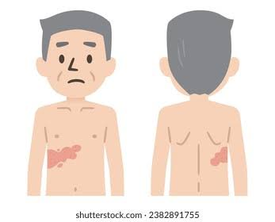

Selamat Datang di Website Herpes Zoster

Mengenal Penyakit Herpes Zoster
Selamat datang di website Informasi dan Edukasi Herpes Zoster. Website ini menyajikan informasi mengenai penyakit Herpes Zoster atau yang dikenal masyarakat sebagai cacar ular. Herpes Zoster merupakan penyakit yang disebabkan oleh aktifnya kembali virus Varicella-Zoster, yaitu virus penyebab cacar air. Penyakit ini ditandai dengan munculnya ruam kemerahan dan lepuhan berisi cairan pada kulit, yang umumnya terjadi pada salah satu sisi tubuh serta dapat disertai rasa nyeri, panas, dan gatal.
Tujuan Website
Website ini dibuat sebagai media informasi dan edukasi kesehatan agar masyarakat dapat mengenali gejala, penyebab, cara penularan, pencegahan, serta penanganan penyakit Herpes Zoster.
Informasi yang Tersedia
Dalam website ini, pengunjung dapat memperoleh berbagai informasi mengenai Herpes Zoster, mulai dari pengertian penyakit, gejala yang ditimbulkan, penyebab dan cara penularan, upaya pencegahan, hingga penanganannya.
Pentingnya Mengenali Herpes Zoster
Mengenali penyakit Herpes Zoster sejak dini sangat penting untuk membantu memperoleh penanganan yang tepat dan mengurangi risiko terjadinya komplikasi. Oleh karena itu, penting bagi masyarakat untuk memahami gejala, penyebab, serta cara pencegahan penyakit Herpes Zoster. Apabila mengalami gejala yang mencurigakan, segera konsultasikan kepada tenaga kesehatan.